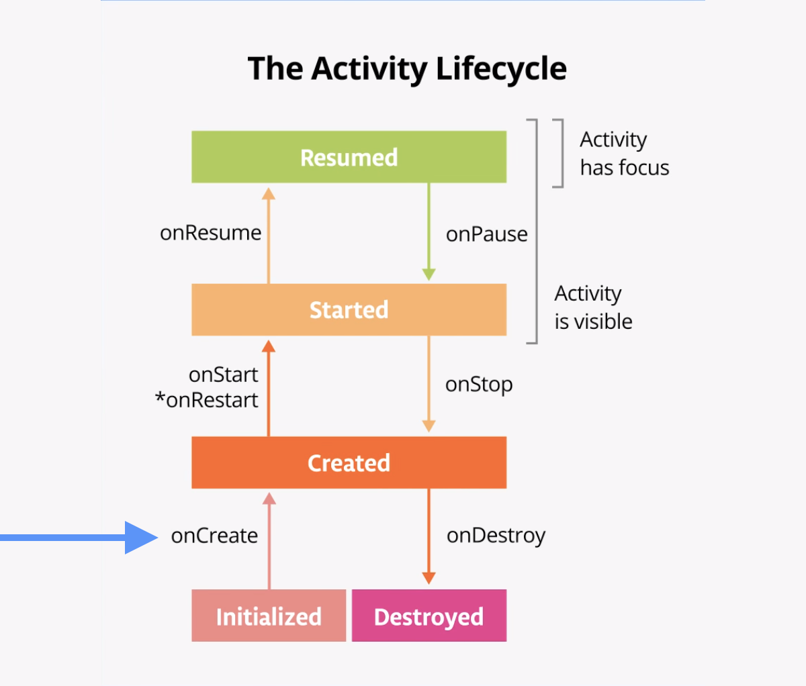

Unit 3.1. Android architecture
Android architecture is a set of guidelines and best practices for building Android applications. It provides a structured approach to app development, making it easier to manage complexity and maintain code quality. The key components of Android architecture include:
-
Activities and Fragments: The building blocks of the user interface in Android. Activities represent a single screen, while fragments are reusable components that can be embedded within activities.
-
ViewModel: A class that holds and manages UI-related data in a lifecycle-conscious way. ViewModels survive configuration changes, such as screen rotations, making them ideal for storing UI state.
-
Repository: A class that abstracts data access from multiple sources, such as a local database and a remote server. Repositories provide a clean API for data access, making it easier to switch between data sources.
-
Room: A persistence library that provides an abstraction layer over SQLite. Room simplifies database access and allows for compile-time verification of SQL queries.
-
Dependency Injection: A design pattern that allows for the decoupling of components in an application.
By following these architectural guidelines, developers can create robust, maintainable, and testable Android applications.
Fragments
Fragments are modular sections of an activity, used to reuse UI components in the old Android architecture. However, with the introduction of Jetpack Compose, fragments are less commonly used in modern Android development.
References
Activities
Activities are the entry point for interacting with the user in an Android application. Each activity is a single screen with a user interface, and it is responsible for managing the lifecycle of the UI components it contains.
Every activity has what is known as a lifecycle, which consists of the different states that an activity can go through, from when the activity first initializes to its destruction, at which time the operating system (OS) reclaims its memory. Typically, the entry point of a program is the main() method. Android activities, however, begin with the onCreate() method. As the user starts your app, navigates between activities, navigates inside and outside of your app, the activity changes state.
The following diagram shows all the activity lifecycle states. As their names indicate, these states represent the status of the activity. An activity can go back and forth between states throughout the lifecycle.
Note
An Android app can have multiple activities. However, it is recommended to have a single activity.

Note
The onRestart() method is not called every time the state transitions between Created and Started. It is only called if onStop() was called and the activity is subsequently restarted.
The lifecycle states are:
onCreate(): Activity is being created.onStart(): Activity becomes visible.onResume(): Activity starts interacting with the user, having focus.onPause(): Activity is partially visible, but not in focus.onStop(): Activity is completely hidden, but still in memory.onDestroy(): Activity is being destroyed.onRestart(): Activity is being restarted after being stopped.
Task: exploring lifecycle
- Create a new project from the source code of this GitHub repository.
- Open the
MainActivity.ktfile and examine the lifecycle methods that have been overridden:onStart,onResume,onPause,onStop,onRestart,onDestroy... Note how thre's aLog.dstatement in each method. - Run the app on an emulator or a physical device and inspect the logcat output. You should see the lifecycle methods being called as you interact with the app (e.g., opening, closing, navigating away from the app).
- Do the next to observe the lifecycle methods being called:
- Rotate the device to see how the activity is recreated.
- Press the home button to send the app to the background and then return to it.
- Open another app to see how your activity is paused and stopped.
- Press the shared button to share content from your app. See how the activity is paused and resumed.
- With the app open, go to Setting and make a change, for example, change the device's rotation setting. See how the activity is recreated.
Lifecycle of a composable
The UI of your app is initially built from running composable functions in a process called Composition.
When the state of your app changes, a recomposition is scheduled. Recomposition is when Compose re-executes the composable functions whose state might have changed and creates an updated UI. The Composition is updated to reflect these changes.
Composable functions have their own lifecycle that is independent of the Activity lifecycle. Its lifecycle is composed of the events: enters the Composition, recomposing 0 or more times, and then leaving the Composition.

In order for Compose to track and trigger a recomposition, it needs to know when state has changed. To indicate to Compose that it should track an object's state, the object needs to be of type State or MutableState. The State type is immutable and can only be read. A MutableState type is mutable and allows reads and writes.
To create the mutable variable revenue, you declare it using mutableStateOf and an initial value.
To instruct Compose to retain and reuse its value during recompositions, you need to declare it with the rememberSaveable function. This function tells Compose to save and restore the value across recompositions and configuration changes, such as screen rotations.
1 | |
Info
You can also use remember instead of rememberSaveable. The difference is that remember only retains the value during recompositions, but not across configuration changes, i.e., if the screen is rotated or the activity is recreated.
The Log class
The Log class in Android is used for logging messages that can help developers debug their applications. It provides a way to print messages to the logcat, which is a system-wide logging facility that collects and displays log messages from various sources, including the Android system and applications.
First, you must import the Log class at the top of your Kotlin file:
1 | |
A good practice is to define a constant for the log tag, which is a string that identifies the source of the log message (usually the activity's name). This helps in filtering log messages in logcat.
1 | |
Then, you can use the various logging methods provided by the Log class to log messages at different levels of severity:
1 2 3 4 5 | |
Intents
An Intent in Android is a messaging object that you can use to request an action from another app component. Intents are used for various purposes, such as starting activities, services, or broadcasting messages.
There are two main types of intents:
- Explicit Intents: These intents specify the exact component (activity, service, etc.) to start by providing the class name. They are typically used for starting activities within the same application.
Example of an explicit intent to start a new activity:
1 2 | |
- Implicit Intents: These intents do not specify a specific component but instead declare a general action to perform. The Android system then determines the best component to handle the intent based on the action and data provided.
Example of an implicit intent to view a webpage:
1 2 3 4 5 | |
Intent Filters
An Intent Filter is a declaration in the AndroidManifest.xml file that specifies the types of intents an activity, service, or broadcast receiver can respond to. Intent filters allow components to be discovered and invoked by other applications based on the actions and data they can handle.
For example, to declare an activity that can handle the "VIEW" action for web URLs, you would add the following intent filter to the activity in the AndroidManifest.xml file:
1 2 3 4 5 6 7 8 | |
This intent filter specifies that SecondActivity can handle the "VIEW" action for both "http" and "https" schemes.